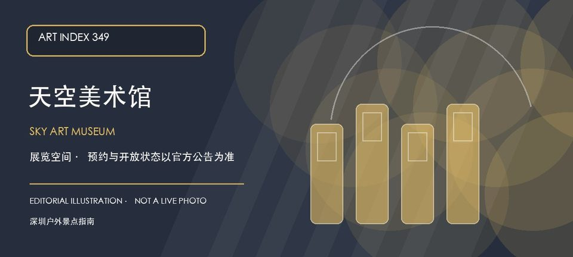

适合谁
适合城市观景与看展结合的行程；对高处、能见度或楼宇门禁敏感者应保留替代路线。

SHENZHEN GUIDE · 349
福田区CBD广电金融中心48—49楼 · 美术馆 / 艺术空间
天空美术馆位于福田CBD广电金融中心高层，官方名录提供了48—49楼的馆址。高层楼宇、城市视野和展览空间构成它的主要到访线索，但观景、展览和公共区域不能互相替代。初访应先确认展期、访客登记、电梯门禁和天气能见度，再决定是否与中心区步行线组合。
WHY GO
适合城市观景与看展结合的行程；对高处、能见度或楼宇门禁敏感者应保留替代路线。
先确认48—49楼可访问区域、预约与身份证件要求，再进入当期展览；高层天气或能见度不佳时不把观景当作固定承诺。
公共交通先到福田CBD广电金融中心，再按天空美术馆公开入口导航；出发前核对楼宇门禁、电梯登记和开放时段。
自驾优先使用广电金融中心或周边正规停车场；车位、收费和社会车辆准入以大厦现场公告为准，不在CBD道路和消防通道临停。
全年可安排，室内空间适合高温或降雨日；晴朗能见度、展期和楼宇运营安排更影响体验。
NEARBY IDEAS
 授权实景图
授权实景图
深圳市民中心位于福中中心区，弧形屋顶、中央轴线和两侧公共文化建筑组成深圳行政中心的代表性城市空间，广场与莲花山形成清晰对景。
 编辑配图·非现场实景
编辑配图·非现场实景
深圳市工业展览馆位于市民中心，展陈以深圳制造业、战略性新兴产业与工业设计演进为主，适合把城市天际线背后的产业系统补进同一天行程。
 编辑配图·非现场实景
编辑配图·非现场实景
深圳市改革开放展览馆位于市民中心当代艺术与城市规划馆内，大型展陈以改革开放关键节点、城市建设档案与实物复原讲述深圳速度，适合与城市规划展览对照观看。